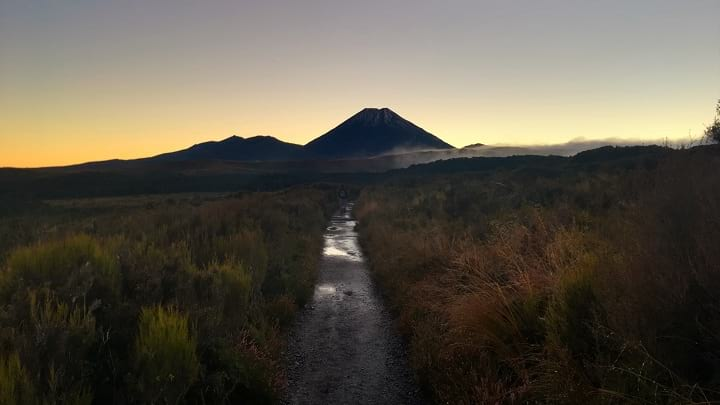

Te Araroa Alternates Guide
One of the main criticisms of Te Araroa is that it misses the best parts of New Zealand. In my experience, this criticism bears some weight.
Don’t misinterpret me: Te Araroa is beautiful. However for various logistical, legal, and geographic reasons the TA omits or avoids a number of spectacular places.
For those TA thru-hikers looking to see as much of New Zealand as possible, there are a number of popular side trips or alternates that can be taken over the course of a thru-hike. While most of these alternatives are unofficial, that does not make them less worthwhile.
What follows is a guide to some of the most popular side trips and alternates along the TA. This list is not exhaustive—there’s simply too much to do in New Zealand. Instead, it represents my selection of alternates and side trips that:
Were somewhat popular among the TA thru-hikers I met in 2016-17.
Are reasonably close to the TA.
Make logistical sense to do during a thru-hike. This guide is written from and for the perspective of a SOBO thru-hiker.
Alternates and Side trips
Table of Contents
Round the Mountain
What is it?
The Round the Mountain Track is a 66.2km loop trail through Tongariro National Park around Mt Ruapehu. It passes through volcanic and alpine landscapes, and serves as less crowded alternative to the very popular Tongariro Northern Circuit Great Walk. DOC advertises it as a 4-6 day tramp, but fit TA hikers have done it in half that time.
Where is it?
Round the Mountain connects with Te Araroa just before Whakapapa Village (km 1143.5). Instead of walking into Whakapapa Village, turn left after crossing a small bridge. You will then be on the Round the Mountain track, which you can follow clockwise around Mt Ruapehu. At the Whakapapaiti Hut junction, you will have to make a decision: either take the Whakapapaiti Valley Track (marked below in orange) to connect directly back to the TA, or continue along the Round the Mountain Track to Bruce Road. Finishing at the road and going back to Whakapapa Village is less convenient, but allows TA thru-hikers to miss as little of the TA as possible without doubling back.
Why should I do it?
Tongariro NP is one of the most unique landscapes in New Zealand. As a TA thru-hiker, you’ll do the famous Tongariro Crossing, which is also the most memorable section of the Tongariro Northern Circuit. Many hikers want to spend more time in the park, but hiking the Northern Circuit Great Walk makes little logistical sense, as it would mean retracing your steps and overlapping significant sections of the TA. Instead, the Round the Mountain Track extends your time in the park without backtracking or requiring reservations.
What about camping?
Waihohonu Hut and Campground requires advanced booking (yellow star on the map). The rest of the huts (Rangipo, Mangaehuehu, Blyth, Mangaturuturu, and Whakapapaiti) along Round the Mountain are serviced first-come-first-served huts (your hut pass will work). As long as TA hikers get an early start on Round the Mountain, you should be able to get past Waihohonu Hut.
Anything else I should know?
Make sure to check the weather before making a decision. Round the Mountain is highly exposed, so you don’t want to do it in bad conditions.
Red Hills Ridge
What is it?
For experienced hikers looking for a bit more challenge, the Red Hills Ridgeline is a 19km high route alternate through the geologically distinct Red Hills. I have not personally done this route, as I did not hear about it until I talked to a local after-the-fact, but it looks like an incredibly challenging and scenic way to finish the Richmond Range section. The Red Hills Ridgeline is an unmarked route—there is no trail and strong navigational skills are a requisite (map & compass).
Where is it?
The Red Hills Ridgeline cuts off ~29km of Te Araroa and replaces it with 19km of difficult ridgeline scrambling. Starting just after Top Wairoa Hut (km 1899.5), the route ascends to Maungakura / Red Hill, then follows along the Red Hills Ridge. This ridge gradually flattens out and the route descends down to Red Hills Hut (km 1928). Here is a complete route description.
Why should I do it?
If you have solid hiking experience and feel moderately comfortable navigating off-trail, the Red Hills Ridgeline offers a good challenge and will reward you with better views of the Nelson Lakes region than Te Araroa. Plus, it’s just more fun to be up on a ridgeline than down in the valley.
Anything else I should know?
This is an exposed route, so make sure to check the weather before attempting it. I doubt that you’ll be able to find suitable camping along the ridgeline, so hikers attempting this traverse should start out early from Top Wairoa Hut. If anyone has completed this traverse and has more information, I would love to hear from you.
Resources
Stag Saddle Ridge
What is it?
Stag Saddle is the highest point along Te Araroa. While officially Te Araroa drops down from the saddle and into a valley, even the Te Araroa Trust recognizes this short alternate as a good weather requisite. The Stag Saddle Ridge Route cuts about 9km off the official trail but is roughly identical in length.
Where is it?
Starting from Stag Saddle (~km 2344), leave Te Araroa and head west (right) maintaining your elevation while contouring the mountain. Within a half kilometer you should reach the ridgeline, and from there it is a straight shot down the ridge. There is a surprisingly well-formed track. Keeping the TA on your left, you can follow the ridge all the way down until it meets a jeep road. Follow that road southeast (left) to rejoin Te Araroa.
Why should I do it?
In good weather, this ridge is a no brainer. Instead of walking through a tussocky valley, the ridge gives stunning 360 degree views of Lake Tekapo, the Southern Alps, and Mt Cook.
Mueller Hut
What is it?
Not an alternate, but a side trip. This very popular out-and-back hike climbs steadily above the bushline to Mueller Hut, with stunning vistas and scenery of Mount Cook. The route is only 5.2km long (one way), and most TA hikers shouldn’t have a problem completing the trek in a single day.
Where is it?
The route starts from White Horse Hill Campground in Mount Cook Village. For TA hikers, the easiest way to get there is to leave Te Araroa at the Lake Pukaki Information Center (km 2432.5). Instead of getting on the Pukaki Flats Cycleway, continue following Highway 8 south. A kilometer south on Highway 8 is the turnoff for Highway 80 to Mount Cook Village. It is a straight ~60km shot down Highway 80—depending on the time of day, hitchhiking shouldn’t be too difficult. The ride down Highway 80 is an experience in itself.
Once at Mount Cook Village, the trailhead can be found at White Horse Hill Campground (If your ride drops you off at the Hillary Alpine Center, you can walk to the campground via the Kea Point Track). From the trailhead, look for “Sealy Tarns Track.” The ascent is steep but well formed. After Sealy Tarns, the route gets more unformed but is still well marked. Make it up to Mueller Hut for a break (or the night). You return the same way you ascended.

Why should I do it?
One of the biggest sights that the TA omits is Mt Cook and the Southern Alps—you see them from afar near Lake Tekapo and Lake Pukaki, but the trail never gets closer than that. The Mueller Hut Route provides stunning views of Mt Cook, Mueller Glacier, and the Southern Alps. These are some of the most spectacular sights in New Zealand and should not be missed.
What about camping?
Because the Mueller Hut Track will take you off the TA, figuring out where to sleep can be difficult. Depending on your timing and budget, there are a couple options:
White Horse Hill Campsite – This is probably the easiest and most affordable option. The campground and the trailhead is first-come, first-serve and costs $13 NZD/person.
Mueller Hut – Mueller hut requires pre-booking. Your hut pass will not suffice. It costs $36 NZD/person during the summer season. Reservations can be made online. Due to the cost and the reservation requirements, Mueller Hut is often not the most viable option for thru-hikers.
Mount Cook Village – The small settlement of Mount Cook Village has a number of accommodations. There are fancy hotels like The Hermitage and Mt Cook Alpine Lodge as well as motels and apartment rentals. There is also a YHA. Note that many of these places book up far in advance.
Back on the trail – Fit hikers who have good luck hitching to and from Mount Cook Village may be able to complete the entire Mueller Hut Route and return to Te Araroa within a day.
Mt Melina Ridge
What is it?
This alternate substitutes the valley-pass route of Te Araroa up and over Martha’s Saddle. Instead, it climbs up to Mt Melina’s eastern ridgeline via the Melina Ridge Track and follows wide bike paths (almost 4WD width) along the main Melina Ridge towards Mt Prospect. This alternate substitutes ~10km of ridgeline walking instead of river walking.
Where is it?
Te Araroa passes an old, private hut near km 2511.5, where it crosses the river and begins its ascent towards Martha’s Saddle. After the hut, cross the river and leave the TA to continue along the 4WD road up towards the ridge. Once on the ridge, turn west (right) and follow the clear path alongside Mt Melina and onward south towards Mt Prospect. Eventually, you will come across a fence marking private property at Mt Prospect. Follow the 4WD road down to the west (right) to rejoin the TA just after it passes Top Timaru Creek Hut (km 2525.5).
Why should I do it?
If you enjoy ridgeline hiking and have good weather, this alternate is a great way to see more of the Hawea Conservation Park. Returning to Te Araroa you will still spend a good deal of time walking beside the Timaru River.
Resources
Cascade Saddle
What is it?
An alternate multi-day route to get from Wanaka to Queenstown. Instead of following the Motatapu Track, it connects the Matukituki Valley Track and the Rees-Dart Track via the Cascade Saddle Route. Cascade Saddle is a stunning and challenging alpine crossing with views of Mt Aspiring and the Dart Glacier. If hikers opt to take the Rees Track exit, the total length is 54km.
Where is it?
This alternate splits off from the TA at Glendhu Bay (km 2600). Instead of walking down Motatapu Road towards the start of the Motatapu Track, continue north and west along Wanaka-Mount Aspiring Road to Raspberry Creek Carpark. It is 54km from Wanaka to the carpark, 30km of which is along unsealed farm roads. The road passes numerous small river crossings. It is a long, multi-day road walk, so consider hitchhiking. The road is lightly traveled—you may have to wait some time.
Once at the Raspberry Creek Carpark, follow the Matukituki Valley Track to Aspiring Hut (Hut passes are not valid here). From Aspiring Hut, it is a steep climb that becomes increasingly exposed up to the pass.
After reaching the saddle, follow the poled route down along the Dart River until you come to Dart Hut. Turn South (left) at the hut, and follow the Rees Track to the Muddy Creek Carpark. From there, you can hitch to Glenarchy, Queenstown, or the Greenstone Station where Te Araroa picks back up (km 2677).
Why should I do it?
I debated whether to include this as an alternate, because the Motatapu Track (the official TA) from Wanaka to Queenstown is quite spectacular. The Motatapu Track crosses through some five passes, is quite strenuous, and very beautiful. At the same time, Cascade Saddle is breathtaking, Dart Glacier is a sight to behold, and Aspiring National Park should not be missed. In an ideal world, every thru-hiker would do both.
If you only have time for one, an informal panel of three thru-hikers voted 2-to-1 in favor of Cascade Saddle. For those with a bit more time, another option is to hike up to Cascade Saddle, retrace your steps to Glendhu Bay, and continue along the Motatapu Track. Finally, if time is not an issue at all, I recommend following the official TA during your thru-hike then coming back to hike Cascade Saddle after finishing.
What about camping?
Aspiring Hut requires a special pass. There is walk up camping available at Aspiring Hut for $5 NZD/person.
Anything else I should know?
Very adventurous hikers may be able to link the Cascade Saddle Route along the Dart River Valley (instead of Rees) and over to the Routeburn Track, thus maintaining continuous footsteps and avoiding the natural break in the trail that currently exists at Lake Wakatipu. This is dependent on the ability to safely cross and stay on the western bank of the Dart River until reaching the removed Rockburn / McIntyres Hut. I do not know of anyone attempting this route, but it seems feasible from topographical maps. If anyone does attempt to connect the Cascade Saddle Route to the Routeburn, please let me know.
Routeburn Track
What is it?
The Routeburn Track is one of New Zealand’s nine Great Walks. It is a 32km track near Queenstown that features spectacular views of Fiordlands National Park. It is an extremely popular and well-maintained trail. The proposed and popular alternate for Te Araroa thru-hikers is to link up the Routeburn with the Greenstone or Caples Tracks to return to the TA. This route skips a marginal section of the official TA while adding some length and significant beauty.
Where is it?
Coming from Queenstown (km 2677), hikers have to either hitch, roadwalk, or take a shuttle to get around Lake Wakatipu and resume the TA at the Greenstone Station. Instead of resuming the hike at the Greenstone Station, crossing the Dart River Valley and take a right onto an unpaved road that heads north towards the start of the Routeburn. The trailhead is obvious and has a nice visitors center. From there, hike the Routeburn until you get to Lake Howden Hut, then leave the Routeburn and turn south onto the Greenstone Track. After a couple kilometers, you are faced with two options (represented by the dotted lines on the map): continue along the Greenstone Track back to Te Araroa, or veer left onto the Caples Hut Track and follow it back to the TA. The Greenstone Track is a more direct route, but the Caples Hut Track allows you to miss less of the official TA.
Why should I do it?
You’d be silly not to do the Routeburn. The track is beautiful and one of the most famous walk in all of New Zealand. It will add a couple days to your trip, so food and timing should be planned accordingly.
What about camping?
All of the huts along the Routeburn, including Lake Howden Hut, require advance reservations and do not honor hut passes. For the nomadic thru-hiker, this situation is less than ideal. Most thru-hikers will start out from the Routeburn trailhead in the morning and clear the entire Routeburn in a single day so as to avoid complicated logistics. One popular option is to camp at Greenstone Saddle Campsite, which is free and only a couple kilometers past Lake Howden Hut. The rest of the huts along the Greenstone and Caples Tracks are first-come, first-serve and accept hut passes.
Anything else I should know?
The side trail up to Conical Hill is spectacular on a clear day.